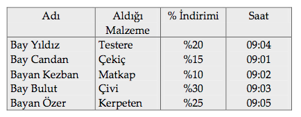

MANTIK BİLEMECESİ-3
Bir hırdavatçı dükkanını açtığında 09:00 ile 09:05 arasında beş kişi alışveriş için dükkana girdi. Aşağıda verilen ipuçlarına dayanarak bu müşterilerin hangisinin yüzde kaç indirim ile, ne aldığını ve saat kaçta aldığını bulunuz.
İpuçları
1. Yüzde 30 indirimde olan çivileri Bayan Kezban’ın hemen arkasından gelen kişi aldı.
2. Matkap, yüzde 15 indirim yapılan malzemenin hemen arkasından satıldı.
3. Testere 09:04’te satıldı. Bunu satın alan bir erkek müşteriydi.
4. Saat 09:02’de satın alınan malzeme en az indirimde olandı.
5. Bay Candan dükkâna ilk girendi ve kerpeten satın almadı.
6. Çekiçe yüzde 20 indirim uygulanmamıştı ve Bay Bulut yüzde 20 indirimli kâr sağlamadı.
7. Bayan Özer istediği malzemeyi yüzde 25 indirimle aldı.
Cevap:
